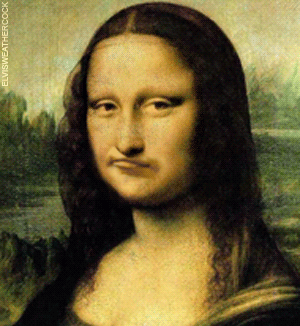

| Muzeul | Sector | Fotografie | Descriere |
|---|---|---|---|
| Muzeul National de Arta | 1 |  |
Muzeul Național de Artă al României a luat ființă în anul 1948, an în care i s-a dat în folosință clădirea fostului palat regal de pe Calea Victoriei din București, puternic afectat în urma bombardamentelor din 1944. |
| Muzeul Antipa | 1 |

|
Muzeul Național de Istorie Naturală Grigore Antipa este un muzeu din București, amplasat în Șoseaua Kiseleff nr. 1. Patrimoniul muzeului este format din peste 2 milioane de piese, grupate în diferite colecții zoologice, paleontologice, de minerale, roci și etnografice. |